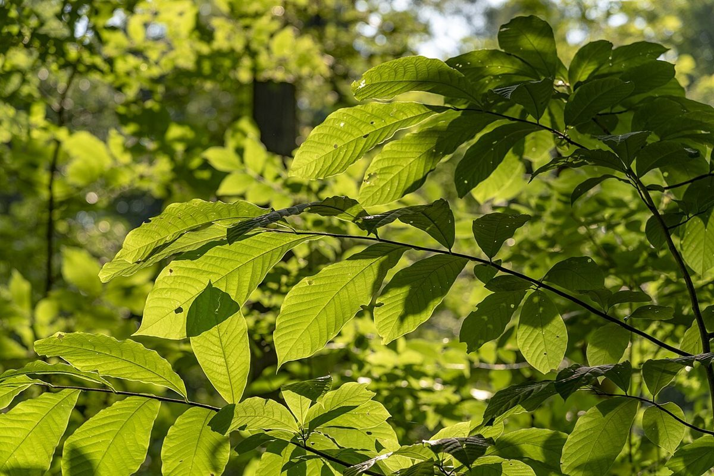
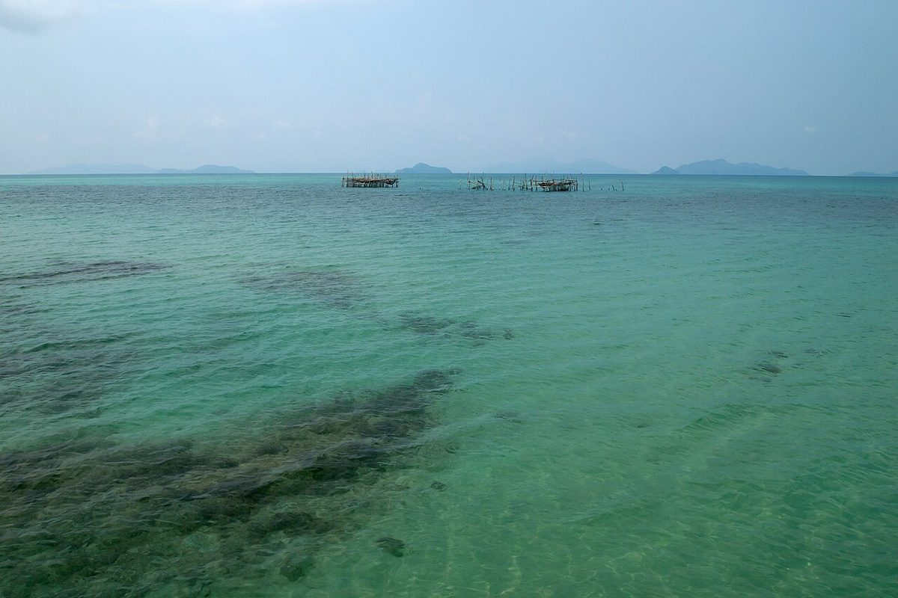
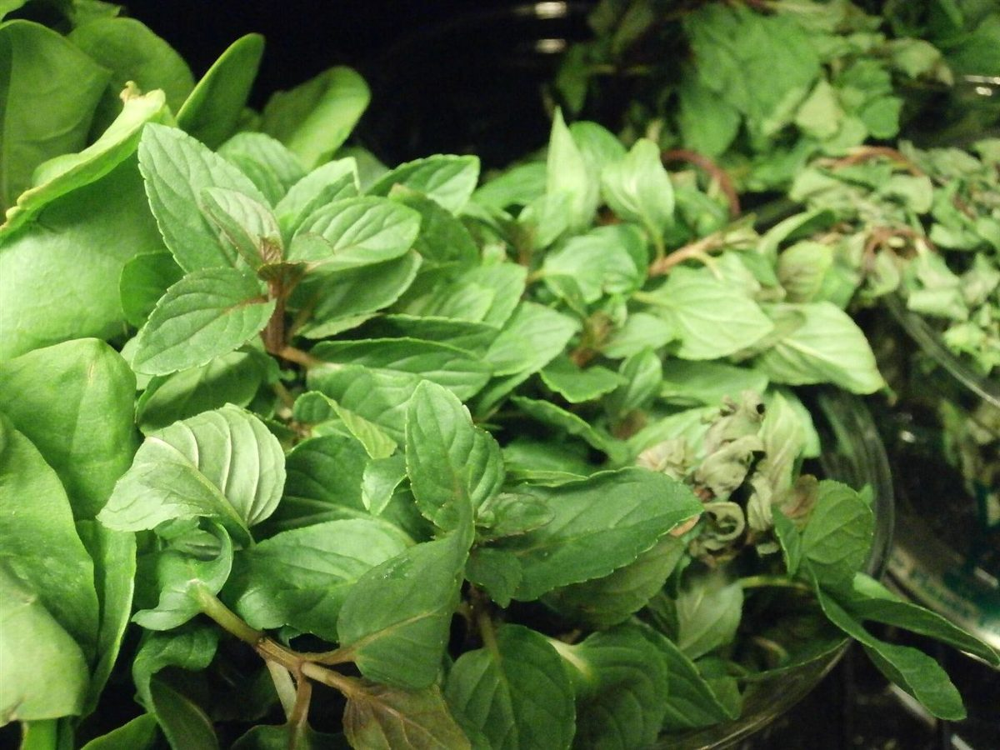

店のこと
確認できたことだけ。
お店について確認できているのは、所在地とInstagramのアカウントだけです。
節1 ・ 確認できていること
- 店名は「ペパーミント」、業種はカフェ
- 所在地は三重県津市北丸之内38
- 電話番号はなし。ご連絡はInstagramから
- 営業時間・定休日・メニュー・価格・ご予約・駐車場は準備中
節2 ・ このサイトの作り
節で区切って、左右に置く。
お店の様子や考えは、これから教えていただく内容で書き直します。いまのページは仮の枠で、写真もすべてフリー素材のイメージです。


節3 ・ 差し替え予定
ご提供いただく写真・メニュー・営業時間などに差し替えます。ご希望があれば、色や構成も変更できます。

